Collision Detection
Broadphase pruning and OBB narrowphase contact generation.
Bounding Volumes
Reference visuals for the basic bounding representations used during broadphase and narrowphase setup.
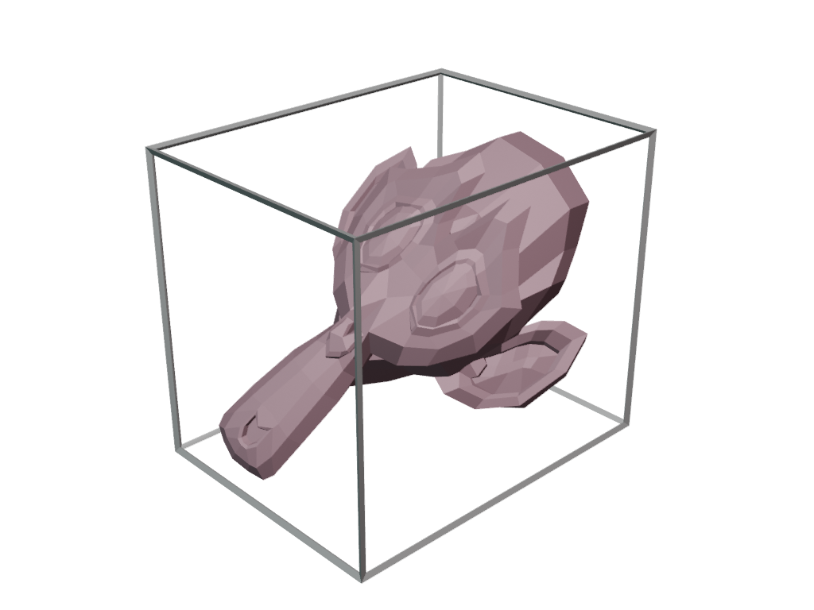
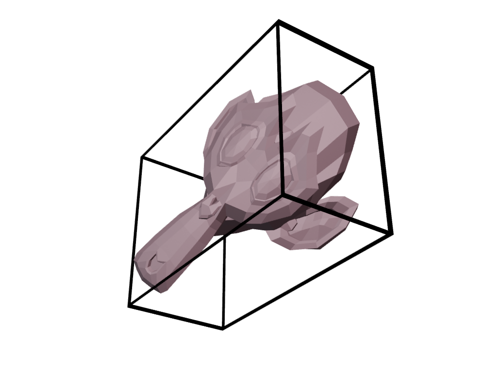
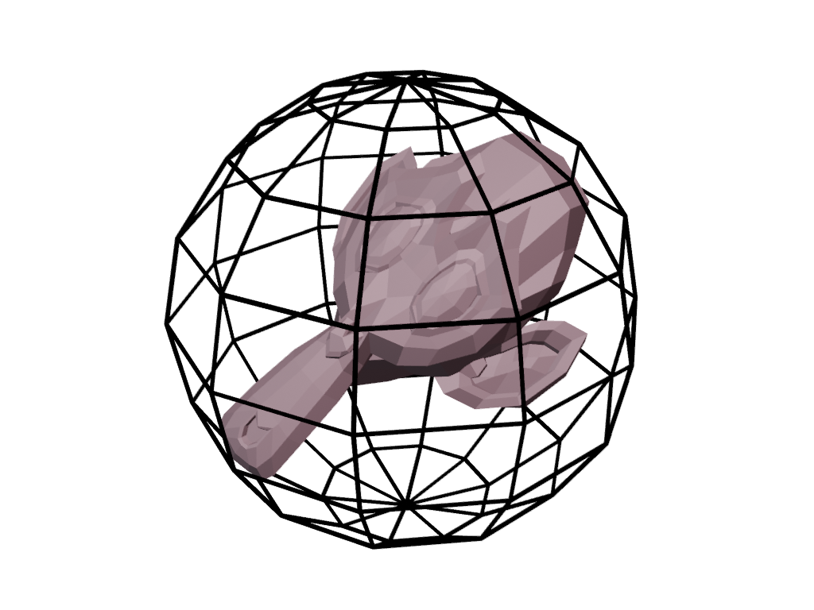
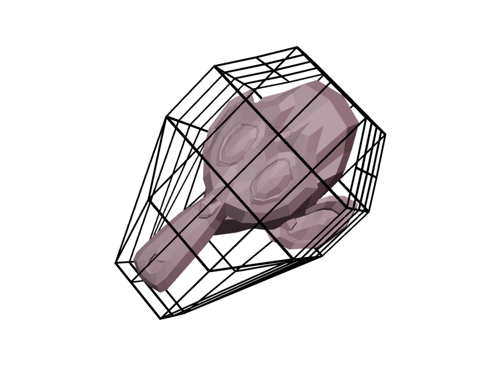
Intersection Checking Progression
The collision pipeline starts from a single unit cube, applies transforms, then scales up to pair-wise checks with AABB broadphase and SAT narrowphase.
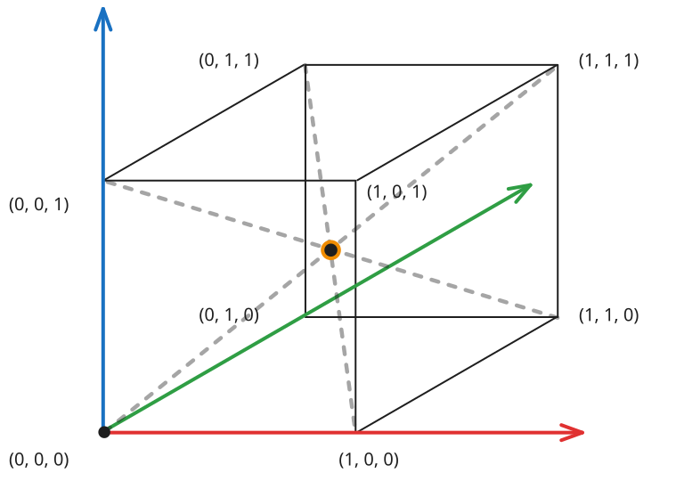
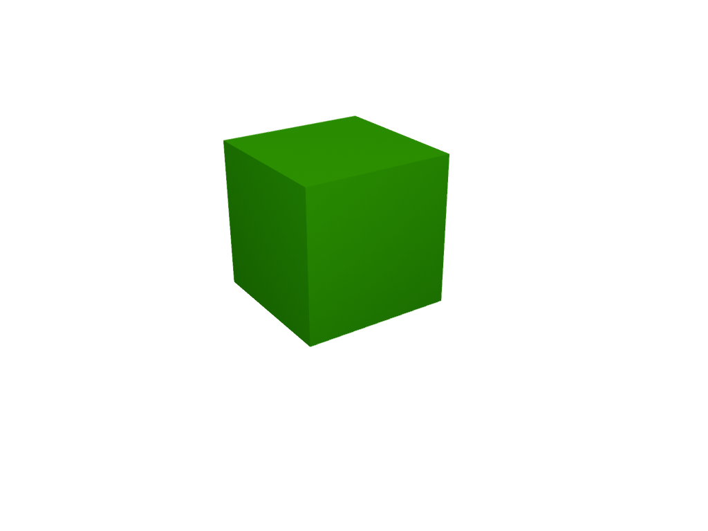
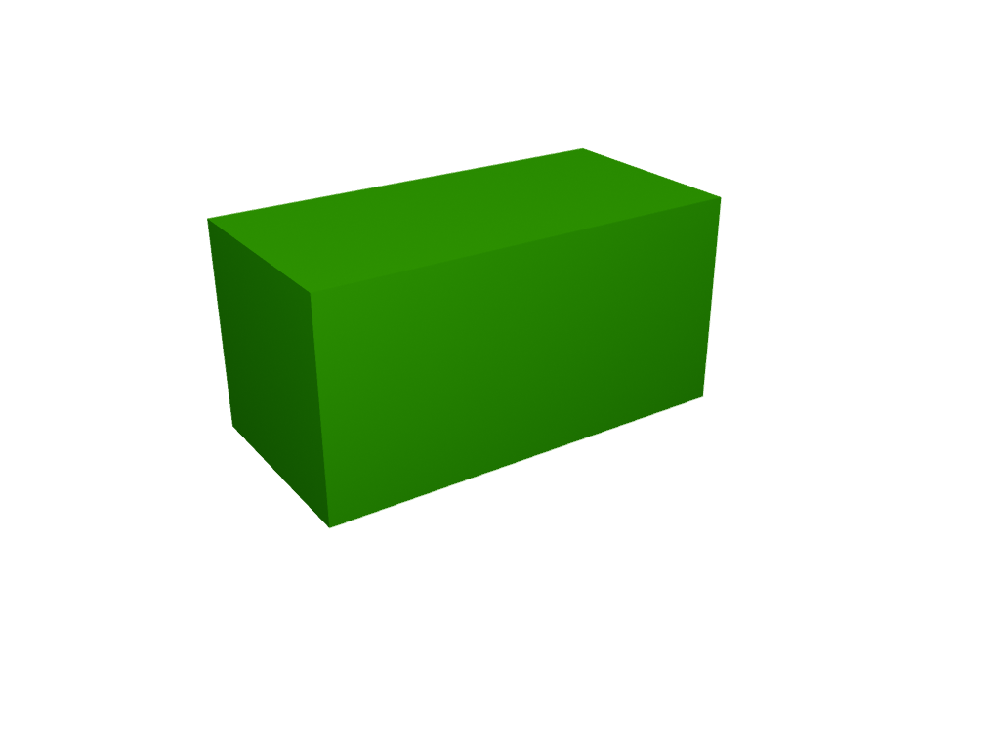
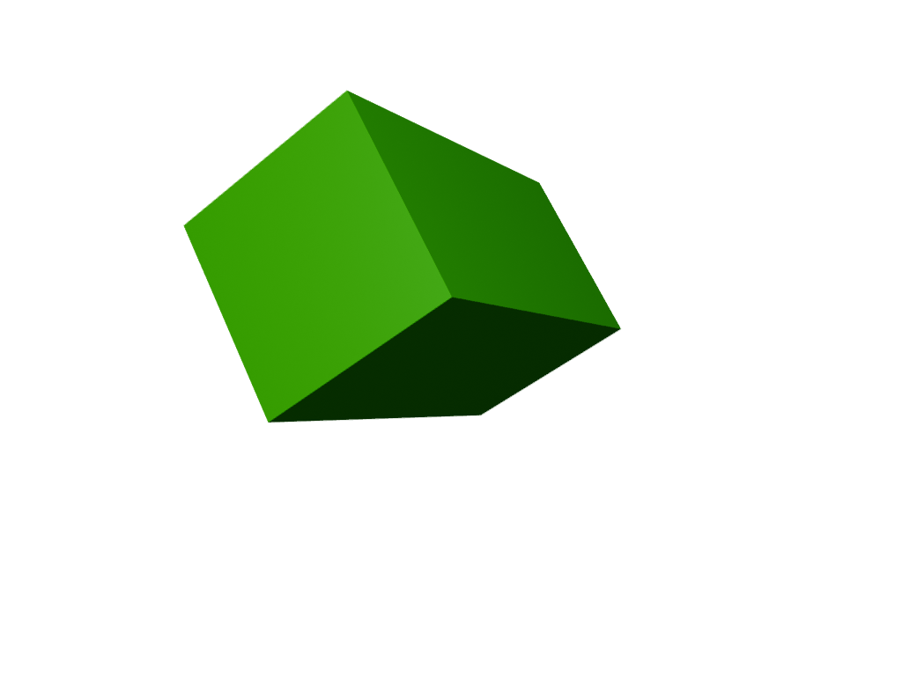
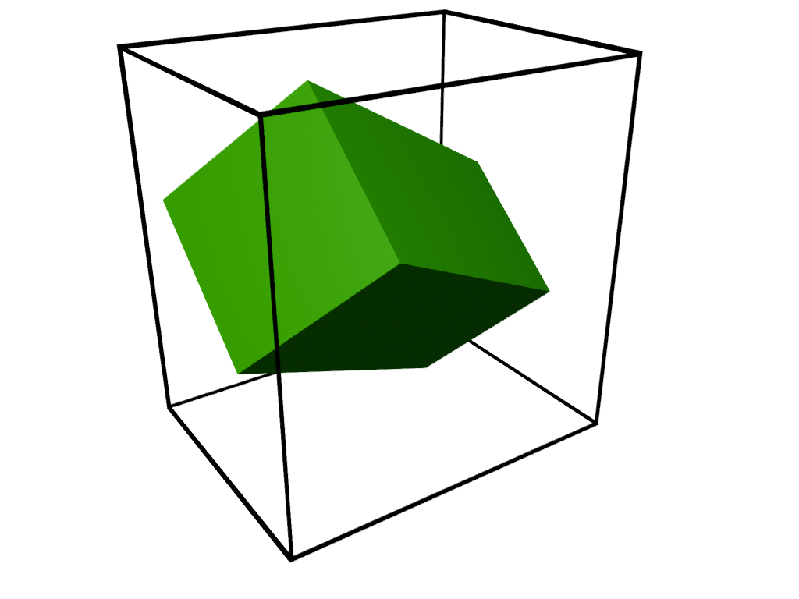
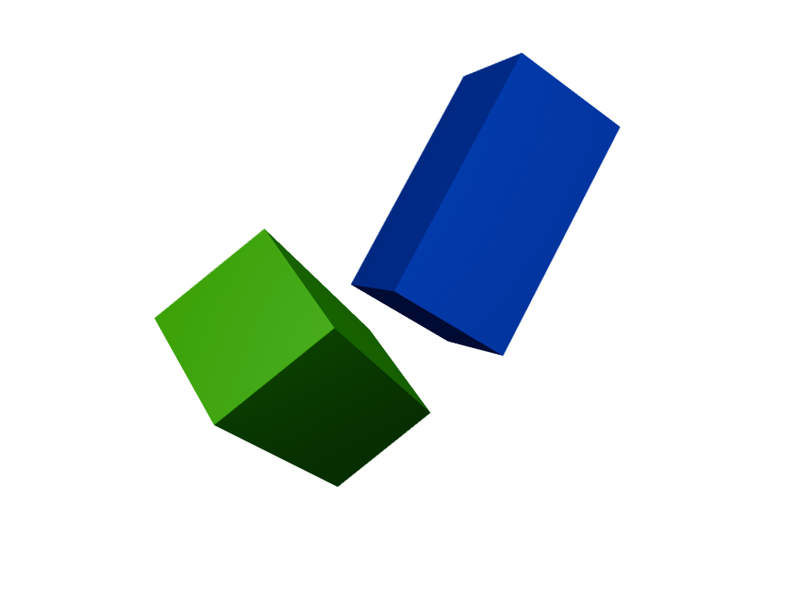
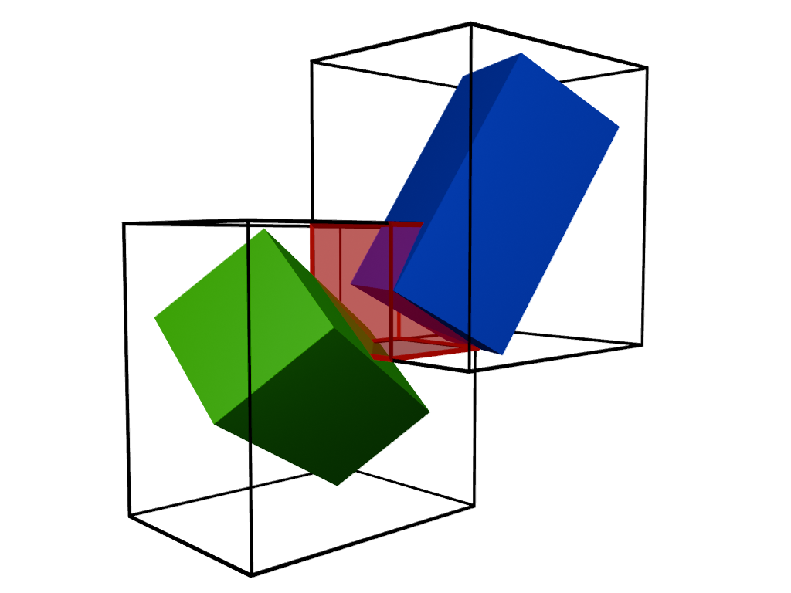
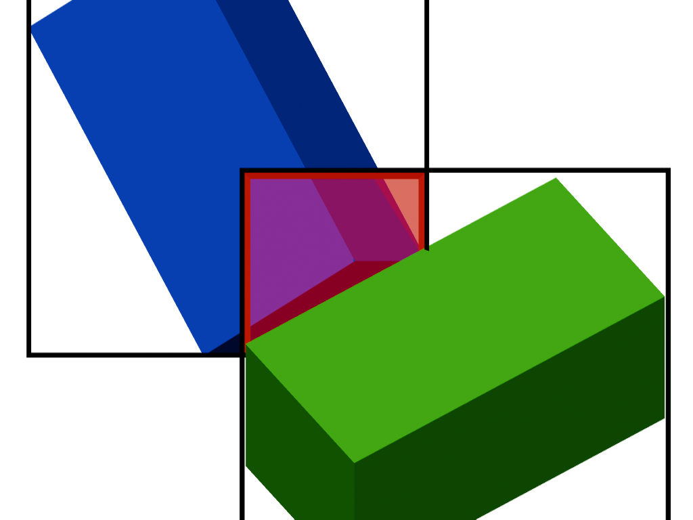
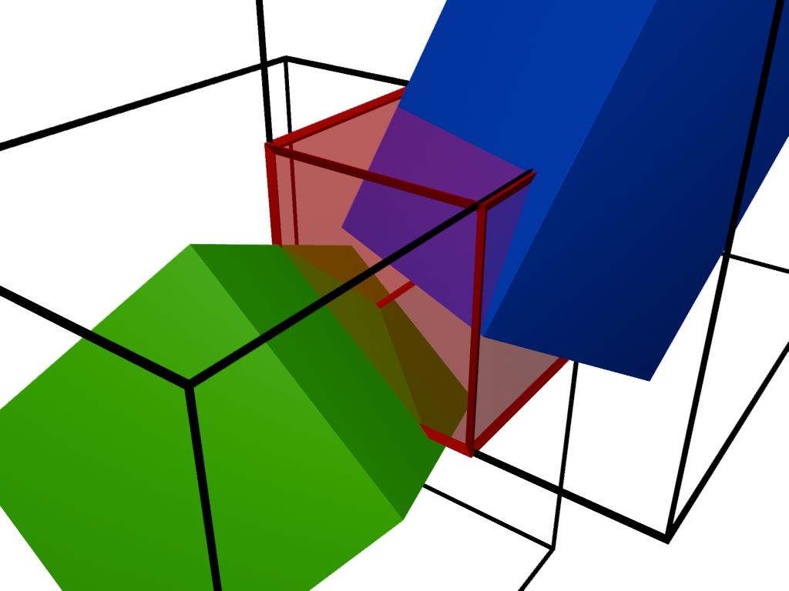
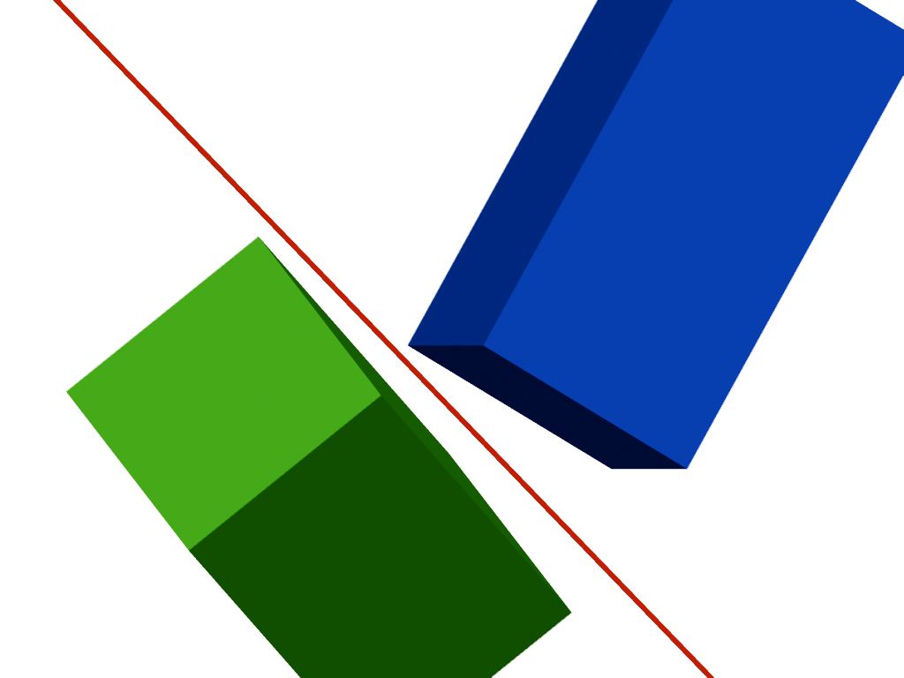
Images are shown inside framed panels to keep transparent PNG edges readable on all backgrounds.
Worked Example: Two Cubes to AABB Overlap
Using the exact setup from this scene: green cube at \(c_g=(0,0,0)\), rotation \((-35^\circ,40^\circ,0^\circ)\), scale \((1,2,1)\); blue cube at \(c_b=(1.5,2.4,2.5)\), rotation \((-60^\circ,180^\circ,-22.5^\circ)\), scale \((1,2,1)\). Here we interpret Blender-style unit scale as half-extents \(e=(1,2,1)\).
For each OBB, we compute world AABB half-extents exactly as in the collision code:
with \(R = R_z(\gamma)R_y(\beta)R_x(\alpha)\), matching the Euler composition used in the math notes.
Green (c = [0.000, 0.000, 0.000]) h = [2.030, 2.212, 2.149] a_min = [-2.030, -2.212, -2.149] a_max = [ 2.030, 2.212, 2.149] Blue (c = [1.500, 2.400, 2.500]) h = [1.638, 2.107, 2.232] a_min = [-0.138, 0.293, 0.268] a_max = [ 3.138, 4.507, 4.732]
The broadphase overlap interval is:
i_min = [-0.138, 0.293, 0.268] i_max = [ 2.030, 2.212, 2.149] Delta = [ 2.168, 1.919, 1.881]
Since all components of \(\Delta\) are positive, the AABBs overlap and this pair proceeds to SAT narrowphase.
Broadphase: Sweep and Prune on AABB
Each OBB is conservatively projected to a world AABB. Candidate pairs are generated by sorting by minimum x-bound \(a_{\min,x}\), maintaining an active set, and rejecting pairs that do not overlap on \(y\) and \(z\).
- Static-static pairs are skipped early.
- Candidate list is reused from scratch buffers each step.
Narrowphase: OBB vs OBB SAT
Overlap is tested along 15 axes: 3 face normals from A, 3 from B, and 9 cross-product axes.
If any axis has non-positive overlap, the pair is separated. Otherwise, the minimum penetration axis determines contact normal and penetration depth.
Contact Point Generation
Candidate points are assembled from corners of each box that lie inside the other box. The set is reduced to at most 4 points to control solver cost.
Contact caching keys are quantized by position cell and stable body-id ordering: